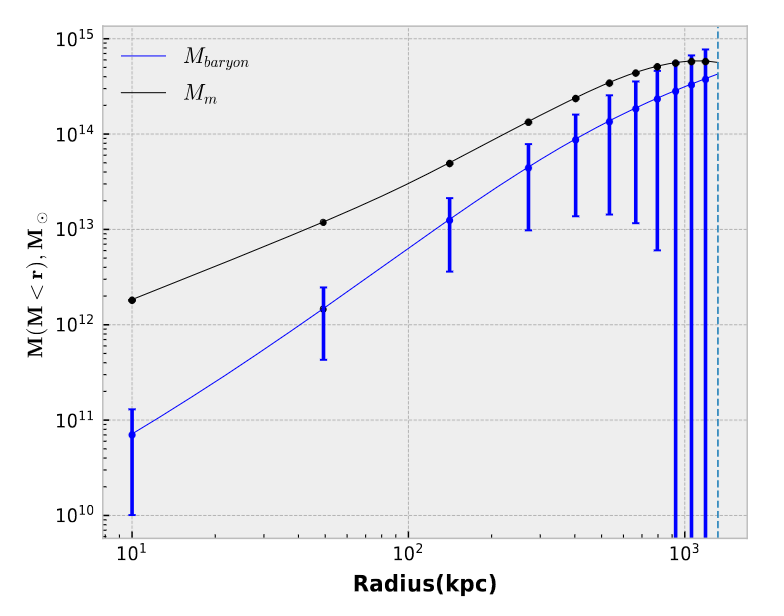

# Research Interests
Testing Modified Gravity Theories
[arXiv:1112.3960]
The inability of the Standard Model of Cosmology ΛCDM to explain a bunch of empirical galaxy scaling relations
and the surprising(?) ability of Modified Gravity Theories to explain them without invoking dark matter is a perplexing and fascinating problem to me.
Inspite of these successes, these theories fail to explain the dynamics of the universe on the cluster scale, making them the ideal testing entities for these theories.
[SD and I tested two of these theories](https://arxiv.org/abs/2401.00707) , MOND and Entropic Gravity on cluster scale using new eROSITA Data and verified that these theories are indeed successful on a larger scale
but are afflicted with order of magnitude discrepancies closer to the cluster centre. This is an intriguing area of research in cosmology and more progress
is anticipated both in theory(on relativistic scales) and observation, with the availability of high quality X-Ray Data.

Hubble Tension
[arXiv:2109.01161]
There exists a 4-6σ discrepancy between the value of the Hubble Constant measured locally, using SNIa/Variable Star measurements as against
what was obtained from CMB Measurements by the Planck Satellite. Whether this indicates unknown systematics, or a beyond CDM Theory is still unknown.
Although this is not something I have worked on myself, literature review and discussing with others in the field has piqued my interest in this
problem and it is definitely something I would be interested in investigating in the near future.